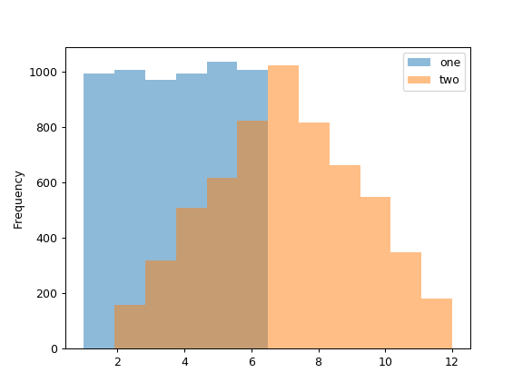

pandas.DataFrame.plot.hist¶
-
DataFrame.plot.hist(by=None, bins=10, **kwds)[source]¶ Draw one histogram of the DataFrame’s columns.
A histogram is a representation of the distribution of data. This function groups the values of all given Series in the DataFrame into bins and draws all bins in one
matplotlib.axes.Axes. This is useful when the DataFrame’s Series are in a similar scale.Parameters: - by : str or sequence, optional
Column in the DataFrame to group by.
- bins : int, default 10
Number of histogram bins to be used.
- **kwds
Additional keyword arguments are documented in
pandas.DataFrame.plot().
Returns: - axes : matplotlib.AxesSubplot histogram.
See also
DataFrame.hist- Draw histograms per DataFrame’s Series.
Series.hist- Draw a histogram with Series’ data.
Examples
When we draw a dice 6000 times, we expect to get each value around 1000 times. But when we draw two dices and sum the result, the distribution is going to be quite different. A histogram illustrates those distributions.
>>> df = pd.DataFrame( ... np.random.randint(1, 7, 6000), ... columns = ['one']) >>> df['two'] = df['one'] + np.random.randint(1, 7, 6000) >>> ax = df.plot.hist(bins=12, alpha=0.5)
